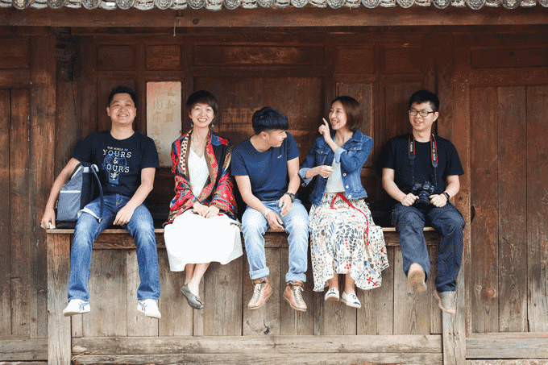
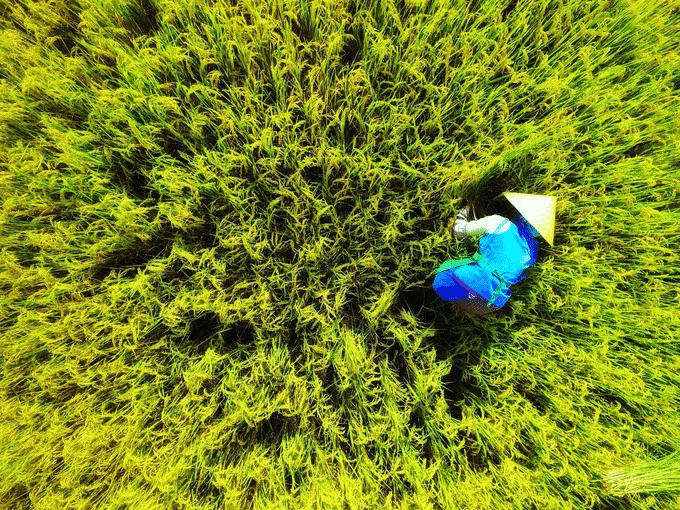
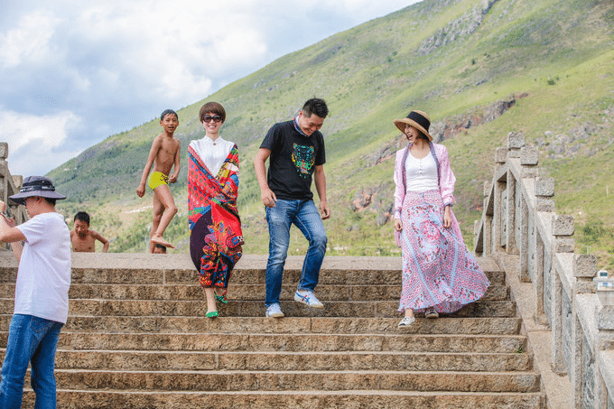
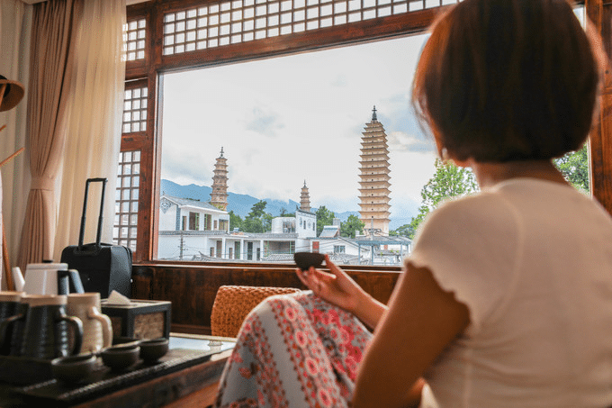
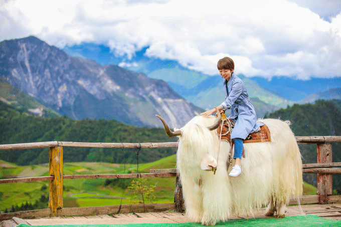
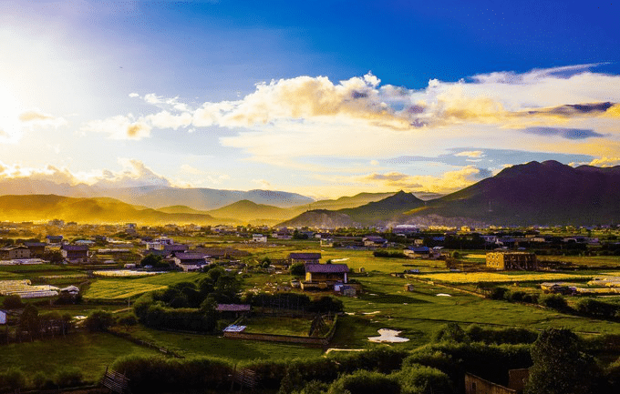
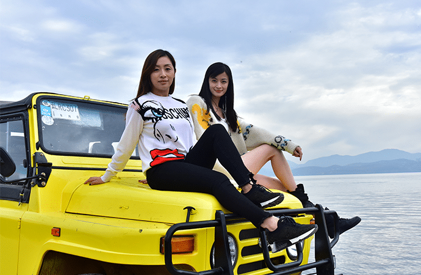
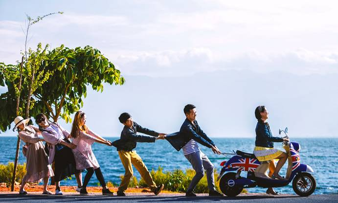

识别二维码
免费测算旅行
天 晚
注：测算结果将通过短信发送给您
开始测算
云南旅游自由行，玩6天多少钱?云南有哪些值得去的景点?
想了解一下那边有哪些景点是必到的？也不知道具体的路线怎样安排，云南旅游从小心中的一个梦，期待了20多年终于要去云南了，苍山洱海、丽江、大理、卢沟湖、香格里拉这些地方都去，求大神来一份攻略，在线等！最好带上图片和游记，谢谢啦！
65977浏览 · 23回答 · 35评论
广州市
 winde问于 2018-12-24
winde问于 2018-12-24四两三丁
LV.24
话说，每一次旅行都是冲动的
就是突然想去一个地方，也许骨子里就是有那么一股劲吧，哈哈哈～7月的时候，看到一篇帖子说8月最适合出游的地方是云南，和琛哥、龙哥、老徐哥几个就相约一起走起，可能是被我们的无处安放的魅力吸引了，申姐和娜娜毅然决然的抛弃了日本行，跟我们一起游云南。行吧，那我们一行六人就云南走起呀～哎呀，那么随意那么任性的吗？没错，就是这样的……

这个季节去云南旅游，空气、环境、人文都是让人欢喜。因为是临时起意，又害怕麻烦，就找了个当地人小童带我们玩，我们的酒店，门票，吃饭都是他帮我们安排的，非常幽默非常耐心，省了我们很多麻烦，特别满意！如果楼主去云南的话建议你可以咨询下小童，他微信是19969156090(点击复制)，主要小童帮你规划精华景点，少走很多弯路，到达云南直接开心的玩景点就行啦，少了很多麻烦！ 行程规划：
大理 — 沙溪 — 香格里拉 — 梅里雪山 — 丽江
Day 1 广州 - 昆明 - 大理
Day 2 大理（无为寺 - 洱源 - 双廊 - 大理古城）
Day 3 大理（周城古村） - 沙溪
Day 4 沙溪 - 香格里拉（普达措国家公园 - 独克宗古城）
Day 5 噶丹·松赞林寺 - 纳帕海
Day 6 香格里拉 - 德钦 - 梅里
Day 7 梅里梅里雪山 - 盐井 - 丽江
Day 8 丽江 - 广州
1.关于自由行还是跟团？无论是跟团还是自由行，都各有弊端，我们选择两者之间的定制游，景点都是和小童做行程定制的时候根据我们的要求和小童的推荐安排的，时间安排上也更多的考虑了我们的感受，行程不赶，安排也用心。
2.第二个问题就是要做好行程规划，包括住宿、景点门票、出行方式这些一定要安排好，旅游旺季可能住的地方都没有，门票也买不到。这些问题找一个好向导都能解决。
3.线路选择问题：按季节来选，常规线路就是大理-丽江-香格里拉/腾冲/西双版纳/泸沽湖，去之前我们了解过，这些线路7-10天都可以玩下来，行程也不会紧张。
4.这个季节去哪里好？大理和丽江是常规路线，每个季节各有不同。
5.需要带的东西：首先必须要带的就是防晒霜，其他的和常规的旅游一样就好
6.云南防坑战略：那边的人大多友好，但是未免也会碰上一些大坑。所以重点就是不要相信路上跟你看似随意介绍产品的人，远离低价团，远离黑车游，出游尤其要注意安全，最好提早做安排。
以上是我对云南的感受和总结，希望能够帮到你，如果还有不明白的地方可以在下面留言，我知道的一定知无不言，不过最近比较忙，可能不会及时回复哈。
下面给你看看我们拍的美美的照片：

【大理】想多拍几张，却又怕惊扰了农忙的主人，刚按了一下快门，就仓惶逃走

【小普陀】有时候开心是会传染的。人生是段孤独的旅程，还好这段有你们相伴。

【大理榕庐酒店】没事儿坐房间喝杯茶还是挺有意思的，另外三塔晚上会亮灯，其实更好看

【香格里拉】像一些小的休息站，还有这种牦牛可以合影。
我之前找小童选择的是大理、丽江、玉龙雪山五天纯玩套餐。一直特别喜欢云南，不止因为她的名字彩云之南，更是因为她的风土人情，来到这里之后，感到了天地造化无处不在的奇迹，无论是随手一拍就是大片的风景，还是千姿百态的动植物，少数名族的风情万种……这里所有的一切，都让我心跳不已。我不喜欢把一次旅行提前多少多少天就做好计划，那样我觉得会失去很多乐趣，最终把时间交给了小童（当地网红旅游达人，吐血推荐~）废话不多说了，彩云之南了解一下~
评论7 1小时前
回复 1 丫哈哈 LV.21
丫哈哈 LV.21 照片都拍得好美云南短暂游走过，哪哪都很美，确实适合深度游，就是没那么多假，只能零星的每次玩一个小地方
回复 2 荒颜潭漩 LV.20
看了四遍，决定按照你的路线走。下个月就出发！
明东@li ：回复 @荒颜潭漩:回复：可以的哦，云南一年四季都有不一样的景，有问题可以随时联系小童，他微信是(点击复制)，他可以给你更专业的建议哦
荒颜潭漩:嗯嗯，好滴，非常感谢，我已经跟他联系上了
回复 3  彭婷(广州) LV.34
彭婷(广州) LV.34
彭婷(广州) LV.34 看你的照片就感觉你们好好玩呀好喜欢你的，（抑制不住内心的喜欢）你们友情好让人羡慕呀。
明东@li ：回复 彭婷(广州) :嘻嘻嘻，谢谢哦～被你说的我好开心呀！你也很好，有耐心，又有眼光，哈哈哈，祝你旅行愉快
回复 4 一只闲蛋黄 LV.24
照片拍的好美呀，楼主是摄影师吗？
回复 5 游画家M LV.34
游画家M LV.34 感觉大理 — 沙溪 — 香格里拉 — 梅里雪山 — 丽江，貌似是大多数人的选择啊，我也是这么玩的，找个有实力的公司安排，专业的人带着玩确实能省不少事，丽江人非常多啊，住宿都不好安排，我们差点就订不到酒店，幸亏云南旅游管家小童帮我们安排，特别感谢!
回复 6  江凝 LV.32
江凝 LV.32
江凝 LV.32 我之前找小童选择的是大理、丽江、玉龙雪山五天纯玩套餐。一直特别喜欢云南，不止因为她的名字彩云之南，更是因为她的风土人情，来到这里之后，感到了天地造化无处不在的奇迹，无论是随手一拍就是大片的风景，还是千姿百态的动植物，少数名族的风情万种……这里所有的一切，都让我心跳不已。我不喜欢把一次旅行提前多少多少天就做好计划，那样我觉得会失去很多乐趣，最终把时间交给了小童（当地网红旅游达人，吐血推荐~）废话不多说了，彩云之南了解一下~

冯琰
LV.23
我这次和闺蜜一起旅行，也去了云南，一个星期的时间。我们这次过去经过网上的再三筛选，联系的是网评挺不错的旅游管家小童，帮我们定制线路的。他微信是(点击复制)大概的行程安排如下：
D1：昆明/丽江接机，晚乘火车硬卧至丽江/入住，住火车/丽江
D2：丽江拉市海，束河古镇晚丽水金沙表演；丽江古城，住丽江
D3：泸沽湖，情人滩，乘猪槽船，海草走婚桥，摩梭走婚宴，晚安排摩梭篝火晚会，住泸沽湖
D4：参观摩梭家访返丽江，住丽江
D5：洱海（赠送豪华游轮），登南诏风情岛，蝴蝶泉公园，住大理
D6：大理古城，崇圣寺三塔，洋人街晚动车返昆明，结束行程

全程一个商务车带我们自由游玩。不包含来回机票，价格也就2000左右一位，确实划算很省心又自由，玩的很舒心！我们主要是时间不够了，不然还可以去个香格里拉，那就非常完美了。
评论1 2小时前
回复 1 谢芳乐 LV.38
楼主请问一下，你说的云南珍珍珍珍们有住宿和餐饮安排的吗？然后游玩了五天花了多少钱呢？

Cristina
LV.25
Biubiu~推荐楼主丽江一定要玩三天，在古城安静的呆一天，逛逛城里的景点、品尝美食、扫扫小店；第二天拉市海骑马、游览玉龙雪山、去更安静的白沙古镇看壁画；第三天走走束河，除游览束河景点外，其余时间就留给最好的高原阳光吧。这个是我上次去的时候小童帮我安排的线路，希望可以帮到你。线路：
D1丽江古城→大石桥→四方街→木府→黑龙潭
D2玉龙雪山→白水河→白沙古镇
D3拉市海→束河→束河四方街→青龙桥→龙泉寺
评论1 5小时前
回复 2 陆姣乐 LV.40
答主是联系的珍珍的吗，本来还很担心不知道怎么玩，非常感谢，很受用
爱旅行的菇凉
LV.21
近期刚从那边回来，说到云南，我算是很有发言权了，分享给你：这次是约着朋友两家出来旅行，因为是家庭游，自由行想着麻烦，朋友也说去云南不建议自由行或自驾游，云南景点多，少数民族方言多，还要担心高原反应，想想到时候临时坐车也特浪费时间 作为一个北方人实在不想这么累！就网上找了一家云南当地口碑好的旅行社，我们是自己订好往返机票，提前联系了规划师小童安排了6天的行程，抵达云南之前就帮我们把住宿、导游、门票、交通等都安排好了，只要将自己的计划告诉他，对方帮忙规划一个行程，敲定，就完事了！ 重要的是全程没任何强迫消费导游服务特棒！说实在话导游小童特别关照我们家，因为看我们有小孩我们一家也特别感谢！
一直很喜欢这句话“我会在哪遇见你 是不是在一个遥远地方，那里有人在歌唱，那里有满天星光”。云南之旅也让我放飞了一把。。。。。。

评论1 1星期前
回复 1 唐澜 LV.24
我也带算带家人去云南，但是就怕带孩子会麻烦，找他是不是会比较好呀？回复：带小孩出去是会有点麻烦的，但小童他微信是(点击复制)路上还帮我们一起照顾小孩，真的特别感谢他，让我们这几天过的非常的开心。
展开的剩余内容